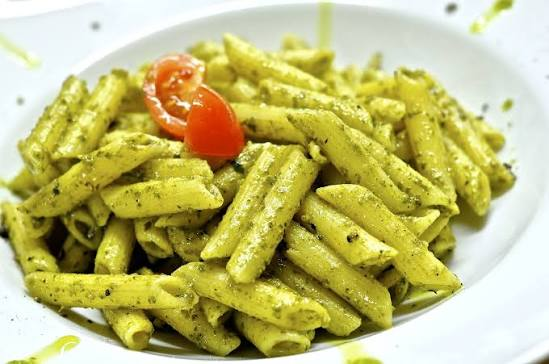

Pesto Pasta

Description
Fresh, vibrant basil pesto tossed with al dente pasta — a simple Italian classic ready in under 30 minutes.
Ingredients
- 400 grams pasta (spaghetti, trofie, or linguine)
- 2 cups fresh basil leaves, packed
- 2 garlic cloves
- 3 tablespoons pine nuts (or walnuts)
- 60 grams parmesan, freshly grated
- 20 grams pecorino romano, grated (optional)
- 6 tablespoons extra virgin olive oil
- 0.5 teaspoons salt
- 0.3 teaspoons black pepper
- 1 teaspoons lemon juice (optional)
- 0.5 cups pasta cooking water (reserved)
Steps
- In a dry skillet over medium heat, toast 3 tablespoons pine nuts
(or walnuts) for 2–3 minutes, stirring frequently, until golden and fragrant.
Watch carefully — they burn quickly. Remove and let cool.
- Bring a large pot of water to a boil. Season generously with salt — it should taste like
the sea. Cook 400 grams pasta (spaghetti, trofie, or linguine) according to package
instructions until al dente. Before draining, reserve 0.5 cups pasta cooking water
(reserved).
- In a food processor or blender, combine 2 cups fresh basil leaves, packed,
2 garlic cloves, toasted 3 tablespoons pine nuts (or walnuts), 60 grams parmesan,
freshly grated, and 20 grams pecorino romano, grated (optional). Pulse until roughly
chopped. With the motor running, slowly drizzle in 6 tablespoons extra virgin olive oil
until smooth. Season with 0.5 teaspoons salt, 0.3 teaspoons black pepper, and 1 teaspoons
lemon juice (optional) to taste. For a chunkier texture, use a mortar and pestle.
- Drain the pasta and return it to the warm pot (off the heat).
Add the pesto and toss to coat. Gradually add splashes of the reserved pasta water
to loosen the sauce to a silky, coating consistency. The starchy water is the key to a
creamy, restaurant-quality result.
- Plate immediately and finish with extra grated 60 grams parmesan, freshly grated, a
drizzle of 6 tablespoons extra virgin olive oil, and a crack of 0.3 teaspoons black
pepper. Garnish with a few fresh basil leaves if desired.
Enjoy making Pesto Pasta!
Home